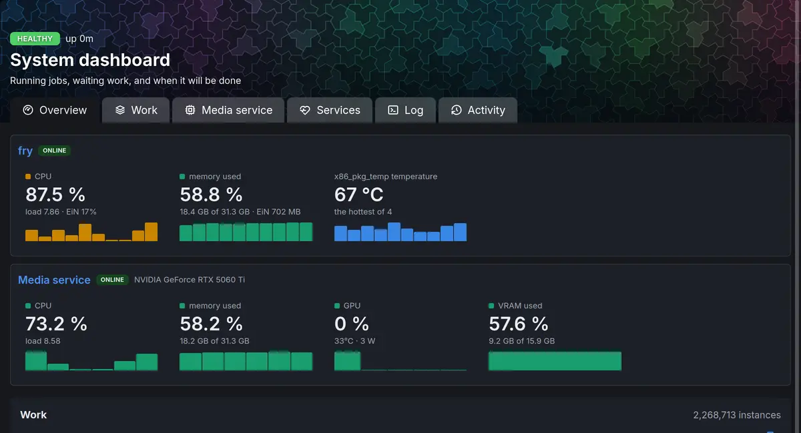

The media service, EMS, holds every media tool and model the Archive uses: it reads metadata, makes thumbnails and video renditions, finds faces, voices and text, transcribes speech and makes pictures searchable. This section applies once the Archive is installed, and this page is for the administrator who installs the media service, watches it and tunes it.
Two parts
The media service comes in two parts, installed in different ways:
- The
emsmodule, EiN's side of it: the client the Archive calls the media service through, its health on the Dashboard, with the Media service tab and the graphics card's readings, andems-text-embed, which turns text into vectors so that things can be found by meaning. Installing thearchivemodule installs theemsmodule with it (Modules). - The media service itself, the
emscontainer that runs beside EiN. The installer's--emsadds it (Add the media service); the module does not.
The Archive needs both: without them, nothing it takes in gets thumbnails, dates, faces or searchable text. Without the Archive they have nothing to do. The one other use of them is the assistant's command search, which with their text vectors finds commands by meaning (Find the command you need).
What the media service does
EiN itself runs no media tool. Whenever a file needs looking at, EiN sends the media service a request naming the file, and the media service answers or writes the result where EiN asked. It keeps no data of its own and knows nothing of the tree: it reads the files EiN stores, and nothing else.
| Work | What you see in EiN |
|---|---|
| Reading dates, places, cameras and codecs | Dates and places on pictures; staging can group files |
| Thumbnails, picture sizes, posters and waveforms | Pictures, videos and recordings show in the grids and the viewer |
| Video and audio renditions (AV1 video, AAC audio) | Videos and recordings play in the browser |
| Faces, voices and who is speaking | People and faces |
| Transcripts and language detection | What is said in videos and recordings, searchable |
| Text in pictures and handwriting, text in documents | Text found in photographed pages, letters and PDFs, searchable |
| Picture and text vectors | Finding pictures by what they show, and text by meaning |
| Fingerprints and copy detection | Duplicates |
| Shot boundaries | Chapters in a video |
The media service generates no text. The chat belongs to the assistant's language model, and no processing step depends on it.
What happens without it
With the Archive installed and no media service, EiN still takes in, keeps and shares what you upload, but nothing new is read:
- Uploads wait in staging as being prepared.
- New files get no metadata, thumbnails, faces, transcripts or search vectors.
- The Dashboard shows the warning
http://ems:8181 is not answering; work that needs it waitson its Overview tab. A warning does not stop Healthy.
None of this work is lost. Each step that needs the media service waits without using up its retries, and runs once the media service answers again.
Models, tools and their licences
The media service's own code is under the MIT licence, as The licence explains. The media service's image also downloads and carries models and tools made by others, each under its own licence. None of them forbids commercial use, and two state no licence for their weights (Using EiN commercially). This is what the image carries, all of it used by the Archive:
| What it does in EiN | Model or tool | Licence: code / weights | Note |
|---|---|---|---|
| Faces in pictures and videos | RetinaFace ResNet-34, its v0.0.1 release | MIT / MIT | Head pose is read from its five points |
| A fingerprint per face, to tie it to a person | Alibaba DAMO's TransFace at tag v1.2 |
— / MIT | |
| Transcripts | Whisper large-v3, as faster-whisper runs it |
MIT / MIT | |
| Where speech is, for transcripts | Silero VAD | MIT / MIT | |
| Who is speaking when | NVIDIA Streaming Sortformer diar_streaming_sortformer_4spk-v2 at commit 84edd514b8, run by NeMo |
Apache-2.0 / CC BY 4.0 | Attribution |
| Voiceprints, to tie a voice to a person | NVIDIA TitaNet large at commit 0dc382f401, run by NeMo |
Apache-2.0 / CC BY 4.0 | Attribution |
| The face seen speaking | LR-ASD, its TalkSet weights | MIT / MIT | |
| Picture vectors: finding pictures by what they show | Google's SigLIP 2 So400m/16-384, as Immich exports it | — / Apache-2.0 | Immich's export states no licence of its own |
| Text vectors: finding text by meaning | BAAI's bge-m3 at commit 5617a9f61b |
— / MIT | |
| Text in pictures | PP-OCRv6, run by RapidOCR | Apache-2.0 / Apache-2.0 | |
| Handwriting in Swedish and Finnish | The National Archives of Finland's multicentury-ppocrv6-medium and multicentury-htr-model | — / Apache-2.0 | |
| Handwriting in English | Microsoft's TrOCR large handwritten | — / not stated | |
| The language of read text | Lingua | Apache-2.0 / Apache-2.0 | |
| Copies of pictures and videos | Meta's SSCD sscd_disc_mixup |
MIT / not stated | |
| Copies of recordings | Chromaprint, as FFmpeg runs it | LGPL-2.1 as a whole; its own code MIT | |
| Shot boundaries: chapters in a video | TransNetV2, its weights converted to PyTorch | MIT / Apache-2.0 | The authors' own weights are in their MIT repository |
| Video and audio: renditions, stills, waveforms | FFmpeg 9.0, BtbN's lgpl build |
LGPL-3.0, as built | |
| Pictures: turning, sizes, AVIF | ImageMagick with libheif and aom | ImageMagick License; LGPL-3.0; BSD-2-Clause | |
| Dates, places, cameras: metadata | ExifTool | The same terms as Perl: Artistic or GPL | |
| Camera RAW files | rawpy with LibRaw | MIT; LGPL-2.1 or CDDL-1.0 | |
| Pictures for the models, HEIC included | Pillow and pi-heif, pillow-heif without its encoders | MIT-CMU; BSD-3-Clause | Its wheels bundle libheif and libde265, both LGPL-3.0 |
| Text of PDF files | pypdfium2 with PDFium | Apache-2.0 or BSD-3-Clause; PDFium BSD-3-Clause | |
| Text of Word and OpenDocument files | python-docx and odfpy | MIT; GPL-2.0 or later, or Apache-2.0 |
In the licence column, code comes before weights where a model has both; — means the media
service runs the weights with no code of the model's own, through the libraries the models run on.
These are under permissive licences: PyTorch under
a BSD-style licence,
ONNX Runtime and
CTranslate2 under MIT, and
transformers,
sentence-transformers and
OpenCV under Apache-2.0.
The image passes each model's weights on unmodified: as their maker publishes them or, where the
table names an export or a conversion, as the one who made it publishes it. They come as is,
without warranties, as their licences say. Beside them, the image writes out two files derived
from published ones: the Finnish handwriting recogniser's character list, and TrOCR's tokenizer in
the format transformers reads. The image's /usr/share/doc/ein-ems/NOTICE.md points
to this page, names the models under Creative Commons, Apache-2.0 and MIT, links the Creative
Commons licences and holds the texts of Apache-2.0 and MIT.
None of EMS's own tools is under the GPL: it encodes AV1 only, so its FFmpeg and its HEIC reader
are builds without the GPL encoders x264 and x265. The image carries one FFmpeg, which also
fingerprints recordings with the Chromaprint built into it, and faster-whisper is installed without
PyAV, since the media service hands it audio FFmpeg has already decoded. The image's GPL code is
Debian's, programs such as bash and coreutils among its packages. NOTICE.md names FFmpeg's build
and where the source of it and of Debian's packages is.
Using EiN commercially
The media service's own code is under the MIT licence, which allows any use, commercial use included. EiN may be used commercially too, but offering it to others as a hosted service needs a licence from its author, since its core is under the Elastic License: The licence says what is allowed.
No model or tool in the table is under terms that forbid commercial use. Two models' weights state no licence of their own: Microsoft's TrOCR large handwritten, which reads English handwriting, and Meta's SSCD, which finds copies of pictures and videos, whose code is under MIT. An installation used commercially checks those two with their makers.
The licences in the table set conditions on passing a model or tool on: CC BY 4.0 a credit to its maker and a link to the licence, Apache-2.0 a copy of the licence and MIT its copyright notice, which this page and the image's notice give; GPL and LGPL conditions on passing the software and its source on. Check each licence for what it asks of your installation.
Add the media service
The installer adds it with --ems, at the first install or any time after:
On the machine EiN runs on, run:
# on the machine EiN runs on, in ~/ein ./setup.sh --emsWith the Archive not installed yet, add it in the same run:
./setup.sh --ems --module archiveinstalls the media service, and the Archive with theemsmodule at EiN's start.Wait for the download. The first time,
setup.shprints== Getting the images (the media service the first time: about 30 GB): the image carries every model, and downloading it takes a while and about 30 GB of disk. Installed from your own source, it is built on the machine instead, which takes about an hour more. Install EiN lists what the machine needs with the media service.setup.shstarts the containers and printsEiN is up at http://…:8080/once EiN answers.Open Dashboard under System in the sidebar, and choose the Media service tab. For the first minutes the media service loads its models; the tab then shows the healthy badge.
--ems writes EIN_EMS=1 to ~/ein/.env, so a later ./setup.sh keeps it. When setup.sh found
an NVIDIA card with its CDI spec at the first install (EIN_GPU=1), the media service gets the card;
The graphics card explains how.
To leave the media service out again, run ./setup.sh --no-ems. Its container stops and is
removed; your files and everything already made from them stay.
How EiN reaches it
In the standard install, both containers run on the same machine and only EiN talks to the media
service, on the compose network. Nothing outside the machine reaches it. Three things connect
them, all set up by setup.sh:
| What | Where it is set | Value |
|---|---|---|
| The address | CFG_EMS_URL for EiN, in compose.yaml |
http://ems:8181 |
| The key | EMS_KEY in .env, made at the install; EiN gets it as CFG_EMS_KEY |
48 random hexadecimal characters |
| The files' way | CFG_EMS_FILES_ADDRESS for EiN, which setup.sh writes |
ein:2224, or host.containers.internal:2224; see below |
The key is a secret: no shell in EiN sees it, and the settings page never shows it once it is set.
The media service accepts a request only with that key. Leave CFG_EMS_URL, EMS_KEY and
EMS_PORT as setup.sh and the compose files set them; Configuration
explains how a value set in the deployment relates to the settings page.
How the media service reaches your files
The media service mounts none of EiN's folders. It reaches the files of each request through EiN's
ems-files service, on the port CFG_EMS_FILES_PORT (2224), at the address
CFG_EMS_FILES_ADDRESS names: EiN's name on the compose network, or, when EiN has a network of its
own under rootless podman, the machine's own address, where setup.sh publishes the port. Every
request EiN sends names it, and the media service mounts it with sshfs, reads the request's files
through the mount, and writes what it made back through it before it answers:
- Each request has a folder of its own there, and each file in it a name of its own: a number and
the file's name in EiN, such as
0-IMG_0001.JPG. The media service never sees where a file is in EiN or on the disk. - Only the files of requests in flight are there, each only while its request runs: the files it reads, read-only, and the files it writes, write-only. Nothing can be listed, removed or renamed, and your originals can never be changed.
- A tool reads only the part of a file it needs, as it would on a folder of its own, and what was read stays cached for the next step on the same file until the file changes.
- The connection carries the files and nothing else. Before it does, the media service proves it is
the one EiN is sending requests to:
ems-filessends a random challenge, which it answers with a secret made whenems-filesstarts and sent along with each request. Nothing is configured on the media service's side, and a restart leaves no secret behind that still works. - By default the connection is not encrypted, which costs half the processor time and suits the standard install, where both run on the same machine and nothing else is on the compose network. The requests to the media service are not encrypted there either.
- The media service's container has
/dev/fuseand theSYS_ADMINcapability for the mount, whichsetup.shgives it. Without a mount it refuses the request, and the step that sent it waits and tries again, as when the media service is away. WhileCFG_EMS_FILES_ADDRESSis empty, EiN sends no request that names a file, and those steps wait the same way.
A media service on another machine reaches EiN's machine at the address you set: put
CFG_EMS_FILES_ADDRESS, as host:port, in ~/ein/.env and run ./setup.sh, which then publishes
the port on EIN_BIND.
Encrypting the files' way
When the media service reaches EiN over a network you do not trust, turn on
CFG_EMS_FILES_TLS. Each connection is then TLS: ems-files and the media service each have a
certificate made when ems-files starts, each accepts only the other's, and both reach the media
service with each request, so there is still nothing to set up on its side. It costs about twice
the processor time of the default. Set it on the settings page or in the deployment as any other
setting; ems-files restarts with it.
The certificates, and the key the media service proves itself with, travel in the requests EiN
sends it, so they are only as private as those requests are. Over a network you do not trust, put
the media service behind an HTTPS proxy too and give its https:// address as CFG_EMS_URL;
otherwise anyone who can read the requests can read the key with them.
Faster reading through the mount
The kernel reads ahead only 128 KiB on an sshfs mount, so a big video comes through at a fraction of what the network carries. On the machine the media service runs on, a rule for udev raises it to 4 MiB for every new mount, a moment after the mount, which is when the setting holds:
# on the machine the media service runs on
echo 'ACTION=="add", SUBSYSTEM=="bdi", KERNEL=="0:*", RUN+="/bin/sh -c '\''sleep 1; echo 4096 > /sys/class/bdi/%k/read_ahead_kb'\''"' | sudo tee /etc/udev/rules.d/90-fuse-readahead.rules
sudo udevadm control --reloadThe rule takes effect at the media service's next mount, which it makes again whenever EiN
restarts. cat /sys/class/bdi/0:*/read_ahead_kb shows 4096 for a mount made after it. On the test
machine one video read at 145 MB/s with it, against 20 MB/s without.
Check that it is running
On the dashboard
Open Dashboard under System and choose the Media service tab. It asks the media service how it is, again and again, while the tab is open.
- Media service: a badge, healthy, degraded or model worker down, and the facts:
version, commit, api, uptime, batch worker and query worker (
up, ordown, with×and the number of restarts), card, driver and url. Under them, when there is a card, Graphics card says who has it now, since when, and when that changes (see The graphics card below). - An orange box for each degradation, such as
gpu degraded, and a yellow one for each warning. - Where the models are: two bars. Graphics card splits the card's memory into each model on it, the media service's own runtime there, the chat model and others that share the card, and what is free. RAM splits the media service's memory into each model held there and its workers' own. A search model drawn hatched, as standby, is in RAM as well as on the card while the card is quiet: the card answers the searches, and the RAM copy answers the moment indexing takes the card, so search never stops. Under the bars, the RAM each worker rebuilds itself at, and how many times it has. How busy the card is, its temperature and its power are the EMS GPU tile on the Overview tab.
- Models: every model the media service can load, in four columns by what it is doing, Working, Loaded, idle, Loading or unloading and Not loaded, each with where it is and its size. Hover a model's name for what it does. Every model in detail opens the full table: where each runs when indexing has the card and when it is quiet, its size, and when it was loaded and last used.
- The last 6 hours: a row for each model that was loaded, solid where it was on the card,
outlined where it was in RAM and underlined while it worked, under the card's mode and the work EiN
had waiting. A model loaded again and again shows as a row that flickers. The
gpu-samplerservice records what the media service holds once a minute, for a week. - Executing: the requests running or waiting now, and the three lanes they go through, models, tools and encodes, each with how many run at once. When requests wait, a request a person is waiting on goes first. Then, when more than one system sends the media service work, the system that has used it the least; the tab then shows Callers too, each system with how much it has used and what it runs and waits for now. Of that system's requests, one for a model that is already working goes first, so the media service does not load one model after another, unless another has waited five minutes.
When the media service does not answer, the tab shows only The media service is not answering, with the address it tried.
The Work tab's Where the work is ends with the media service's part: At the media service, its three lanes with their slots and the requests in them, and On a model, the models it holds, the working ones first and the search models apart.
The Overview tab shows EMS GPU and EMS VRAM tiles beside the computer's own CPU and memory when the media service has a card, and EMS RAM, the memory of the machine the media service runs on, which need not be EiN's, with the media service's own share. With no card the GPU tiles are not there, and with no media service none of them.


About EiN in the account menu also has a Media service tile: its version, the API it speaks, its commit, how long it has been up and the card it runs on, or Not answering.
The health checks
The dashboard's verdict and the health command read these
checks about the media service:
| Check | State | When |
|---|---|---|
ems |
ok | It answers: EMS <commit> answering, up <time> |
ems |
warn | It does not answer: <address> is not answering; work that needs it waits |
ems worker |
warn | the model worker is down; EMS starts it again |
ems gpu |
fail | The card is meant to be there and is not, or the card stopped working |
ems card |
ok | Who has the card, busy or quiet, and which search models are on it |
Only ems gpu fails, and a failed check turns the verdict to Needs a person. The others are
warnings: while the media service restarts or loads its models, the work that needs it waits.
In the terminal
ems-status prints the whole answer the dashboard
draws, and its options shorten it:
# in EiN's terminal
ems-status # everything: version, models, requests, card, memory
ems-status --brief # one line, degradations first
ems-status --checks # the checks above
ems-gpu # the card now, with the last six hoursok ems EMS 3f9a2c1 answering, up 2.4h
ok ems card quiet, search on it: text-query, siglip-textservice-list --detail shows the same one line as
ems-status --brief beside the ems-link service. When the media service does not answer,
ems-status says ems-status: http://ems:8181 is not answering and exits with 1.
On the machine
The media service is the ems service of compose:
# on the machine EiN runs on, in ~/ein
podman compose ps ems # or docker compose
podman compose logs -f ems # what it says, as it says it
podman compose restart emsCompose checks it every 30 seconds, and gives it 120 seconds to start before a failed check counts.
The graphics card
The media service uses an NVIDIA card when it has one, and the CPU otherwise. Without a card every model and every encoder still runs, only more slowly. Where each model runs is the media service's own decision, made each time it loads one; it changes how fast an answer comes, never what it is. A model that does not fit on the card runs on the CPU, except transcription and the Swedish and Finnish handwriting reader, which wait for room on the card. To make room, the media service unloads the models used longest ago first, and only as many as it needs.
With a card, the media service hands the card between indexing and search, and Graphics card mode on the Media service tab shows which has it:
| Mode | What it means |
|---|---|
| busy | Indexing has the graphics card and search runs on the CPU, until no indexing work has come for a while. |
| quiet | No indexing work, so its models are unloaded and search runs on the graphics card, as far as it fits. |
| switching | Handing the graphics card over between indexing and search. |
| off | No graphics card to share: every model runs where its setting says. |
When the mode is off, which EMS_CARD_QUIET_AFTER=0 makes it too, the tab leaves Graphics card out.
It turns quiet after 600 seconds without indexing work (EMS_CARD_QUIET_AFTER). A search never
waits for the card: a separate model process answers searches on the CPU throughout.
The graphics card covers preparing the machine, checking that every model really runs on the card, sharing the card with the language model and being told when the card goes missing.
Change how it works
The media service is configured by its environment alone. ~/ein/.env is that environment, so an
EMS_ line there reaches it:
Add or change the line in
~/ein/.env:# in ~/ein/.env EMS_WHISPER_LANGUAGES=sv,enApply it:
# on the machine EiN runs on, in ~/ein podman compose up -dUnder podman-compose, a container that
podman compose up -dmakes again has no swap limit, so the media service's idle models may go to swap and a search waits for them;./setup.shmakes the containers again with the limit.
Any change restarts the media service, and EiN with it, since both read .env. Requests in flight fail and are retried; see
When the media service restarts.
These are the settings an administrator is most likely to need:
| Setting | Default | What it does |
|---|---|---|
EMS_MEMORY |
16g |
The most memory the container may use. Compose reads it, not the media service. |
EMS_WHISPER_LANGUAGES |
empty | The languages spoken in your recordings, as codes separated by commas, the most common first. Detection is biased towards them; empty lets detection alone decide. |
EMS_WHISPER_LANGUAGE |
empty | One language every recording is transcribed as; detection never runs. Right only when every recording is in that language. |
EMS_EXPECT_GPU |
empty | 1: the machine is meant to have a card, and the ems gpu check fails when none is visible. |
EMS_CARD_SHARE_MB |
0 |
The most of the card the media service holds, in MB, for a card shared with the language model; 0 is all of it. |
EMS_CARD_QUIET_AFTER |
600 |
Seconds without indexing work before search gets the card; 0 keeps search on the CPU. |
EMS_MODEL_IDLE_EVICT |
21600 |
Seconds a model may sit unused before it is unloaded. |
EMS_MODEL_PINNED |
text-query |
Models loaded at start and never unloaded, separated by commas. The search models, text-query and siglip-text, are pinned in the query worker whatever this says, and only there, so the default pins nothing unless EMS_QUERY_WORKER=0. |
EMS_MODEL_MAX_RSS |
0.6 of the container's memory | The batch worker's memory ceiling, such as 10g. At the ceiling the worker finishes its requests and starts again; 0 turns the ceiling off. |
EMS_LIMIT_MODELS |
8 |
Model requests admitted at once. |
EMS_LIMIT_TOOLS |
4 |
Tool requests at once: metadata, thumbnails, fingerprints, document text. Each tool uses one core, so this is a number of cores. |
EMS_LIMIT_ENCODES |
2 |
Transcodes and other whole-file decodes at once. |
EMS_QUEUE_DEPTH |
64 |
Requests of one system that may wait before a new one of its own is answered busy. |
EMS_AFFINITY_WAIT |
300 |
Seconds a model request may wait while requests for a model already working go before it. |
EMS_INTERACTIVE_RESERVE |
1 |
Slots more for a request a person is waiting on, so a person never waits behind indexing. |
EMS_VIDEO_ENCODER |
empty | The video encoder: empty picks av1_nvenc on a card that offers it and libsvtav1 otherwise. |
EMS_CPU_ENCODE_MAX_MB |
4000 |
Memory one video decode on the CPU may grow to. A long video is encoded in pieces within it; one that cannot be is refused. 0 turns the CPU encode off. |
EMS_TOOL_STALL |
900 |
Seconds a tool may go without using the CPU or moving a byte before it is stopped as stuck. Not a limit on how long it may take. |
A change to the transcription settings changes what EMS reports as its transcript settings. With
Keep transcripts current (CFG_MEDIA_TRANSCRIPTS_CURRENT)
left on, the Media module then transcribes every video and recording again in the background,
behind new media (Text and transcripts kept current). On a large archive that is hours of work.
Settings on EiN's side
EiN's own settings for the media service are in the Media service and Transcription groups
of Settings → System, with CFG_MODEL_SLOTS, the Media module's, in Processing. All can be set
with config set:
| Setting | Default | What it does |
|---|---|---|
CFG_EMS_URL |
http://127.0.0.1:8181; the install sets http://ems:8181 |
Where the media service answers |
CFG_EMS_KEY |
none; the install sets it | The key the media service expects |
CFG_EMS_CONNECT_RETRY |
90 |
Seconds a background request keeps retrying while the media service refuses connections |
CFG_EMS_LINK_INTERVAL_SECONDS |
60 |
How often ems-link asks whether the media service answers |
CFG_EMS_FILES_ADDRESS |
empty; the install sets it | Where the media service reaches EiN's files; empty: steps that name a file wait |
CFG_EMS_FILES_PORT |
2224 |
The port ems-files listens on while that address is set |
CFG_EMS_FILES_TLS |
false |
Encrypt the media service's file connections with TLS |
CFG_WHISPER_LANGUAGE |
empty | A language sent with every transcription; empty lets the media service decide |
CFG_WHISPER_VAD_MIN_SILENCE_MS |
empty | The pause that ends a stretch of speech |
CFG_WHISPER_WORD_TIMESTAMPS |
empty | 1 for the time of every word, 0 for timings per segment |
CFG_MODEL_SLOTS |
2 |
Model requests the models worker keeps in flight against the media service at once |
For the languages of a family archive, prefer EMS_WHISPER_LANGUAGES in .env to
CFG_WHISPER_LANGUAGE: the first biases detection, so a holiday clip in English is still
transcribed as English; the second forces one language on everything. Media explains CFG_MODEL_SLOTS and the other slots.
When the media service restarts
A restart takes tens of seconds, longer when models load. Meanwhile:
- A background request that finds the connection refused tries again for up to
CFG_EMS_CONNECT_RETRYseconds (90) before the step gives up for now. - A step that cannot reach the media service, finds it
busy, or finds a model still loading waits without using up an attempt, and runs again later. - A request a person is waiting on, such as a search, does not wait: it fails at once.
- The
ems-linkservice writes each change to its log, such asems-link: down — not answeringandems-link: up — ….
When the media service comes back with a different build, ems-link runs every failed pipeline
instance again at once, since a new build is the likeliest fix for what failed under the old one.
It logs ems-link: EMS <old> -> <new>; failed work runs again: …. Services and logs shows how to read that log.
Update the media service
./setup.sh without options downloads the newest images of EiN and of each service it runs, the
media service included, and starts them again. Only the layers that changed are downloaded. Updating has the
whole procedure.
When something goes differently
The Media service tab says The media service is not answering. Look at the container:
podman compose ps ems. If it is not running, podman compose logs ems says why; start it with
podman compose up -d. If .env has EIN_EMS=0, the media service is not installed: run
./setup.sh --ems.
It answers, but the badge says model worker down. The model process stopped; the media service
starts it again by itself. If it keeps stopping, the count after × beside batch worker climbs:
podman compose logs ems says why. When it ran out of memory, give the container more with
EMS_MEMORY in .env.
gpu degraded and the verdict is Needs a person. The card the machine should have is not
visible to the media service, or its context was lost. A reboot that renumbers the cards is the
usual cause; The graphics card has the fix.
A warning no keys configured: authentication is off. The media service got no key. Check that
EMS_KEY is in ~/ein/.env, and run podman compose up -d.
A warning no roots configured: every file request will be refused. EMS_ROOTS is empty. It
is set in compose.ems.yaml; undo a change to that file with git -C ~/ein checkout compose.ems.yaml
and run podman compose up -d.
Uploads stay being prepared for a long time. Look at Executing on the Media service tab. Requests waiting in the lanes mean the media service is busy: after a large import, the Dashboard reads Catching up until the work is done. With a card, a model shown as CPU loaded is several times slower than on the card; see Performance and sizing.
The first transcription or face search after a quiet spell is slow. Models are unloaded after
EMS_MODEL_IDLE_EVICT seconds unused, and loading one again takes tens of seconds. The Models
table shows it as loading.
The download or the build fails, or the disk fills. The media service's image is about 30 GB,
and podman downloads or builds it in a folder beside its own storage, not in /tmp. Free space there and run ./setup.sh again.
Troubleshooting covers problems that are not the media service's own.